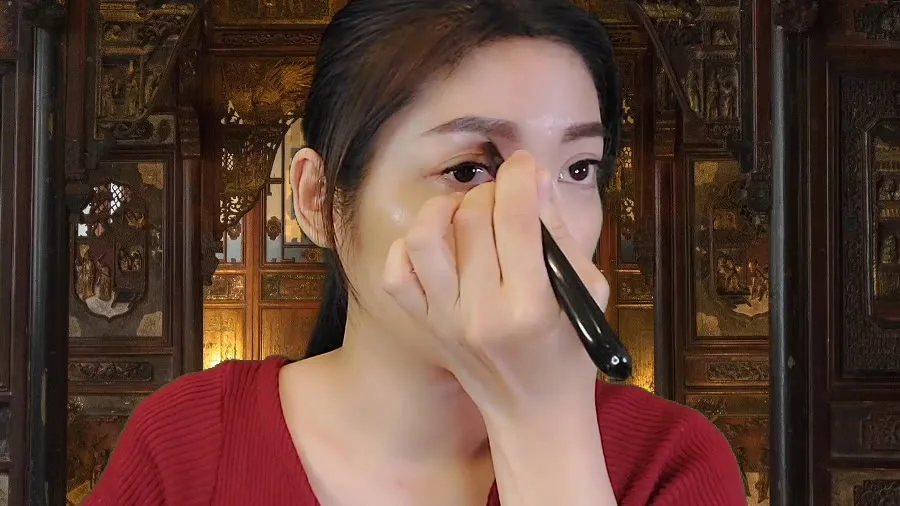
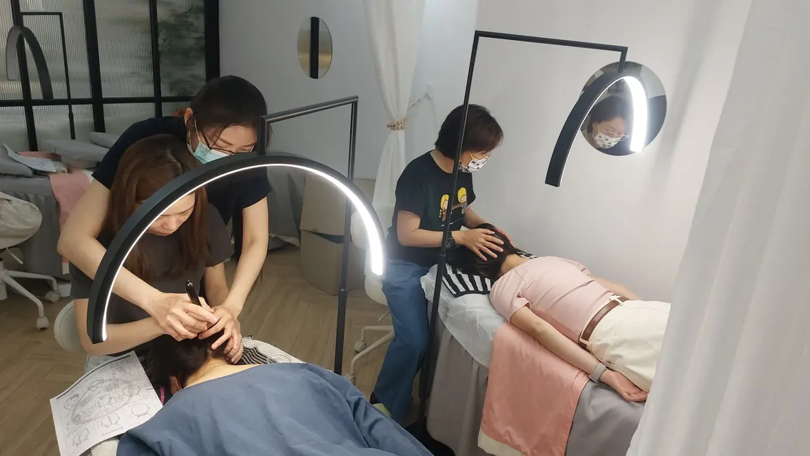

The Bojin Journal · Eyes
Crow's feet at the corners of your eyes?
Those little lines fanning out from your eye corners are mostly from a lifetime of smiling and squinting, layered on top of skin that grew thinner and drier after 40. Nothing here will erase them. But the area holds a surprising amount of squint-tension, and when you work it kindly and in the right way, the corner can look softer, more relaxed, and a little more rested.
Why do I have crow's feet at the corners of my eyes?
Every time you smile, laugh in the sun, or scrunch against a bright screen, the muscle that rings your eye contracts and the skin folds along the same few lines. Do that a few million times over a happy life and those folds start to stay a little, even when your face is at rest. In other words, crow's feet are expression lines. They are a record of your smiling, which is a lovely thing to have caused a not-so-lovely thing.
After about 40, two changes make them show more. The skin at the outer eye is thin and has less of the springy support it once had, and it tends to run drier, so lines catch the light instead of softening. On top of that, many of us hold a low, constant squint through the day without noticing, which keeps that little zone tight and tired.
So this is normal, and it is not a sign you did anything wrong. It is what a well-used, no-longer-25 outer eye looks like.
How the Bojin Method helps the outer eye
First, what bojin is. If you already know gua sha, you have a head start, because bojin grew from the same family of Chinese hands-on face care, so it will feel familiar. But it is its own, deliberate method. What makes it work is three things: the order you work in, the angle you hold the tool, and the exact spot you work.
The traditional tool is a bojin stick, a slim, polished stainless steel tool shaped to follow the curves of the face, and you use its rounded edge. You can start with clean fingertips, or a smooth-edged tool you already own, while you learn the moves, but the stick is what the method was built around. And the pressure is not the barely-there touch people assume, nor is it forceful. It is the right, comfortable pressure for you, firm enough to be felt, never enough to hurt or drag this delicate skin.
For crow's feet, the point is not to iron the lines out. It is to gently release the squint-tension held at the outer eye and temple so the corner softens, to encourage the puffiness and fluid there to move along, and to help your eye cream sink in instead of sitting on top. If a tool you tried before never seemed to do much, it was not your fault. Most of us were handed something with no method attached, no order, no angle, no exact spot. Add the method, and the same few minutes feel different.
At the eye corners, comfortable pressure matters more than hard or light. Hold the right angle, work in the right order, and work the right spot. That order, angle, and placement is the method.

The 5-minute outer-eye and temple reset
Use your bojin stick or clean fingertips, and add a little eye cream or facial oil first so nothing drags across this thin skin. Work in order, follow the angle of the bone, and use the right comfortable pressure, firm enough to feel, never featherlight and never forceful. Stay off the eyeball itself; you are working the bone and the soft edge around it, not the lens of your eye. Slow is the whole point here.

Warm and settle first
Rest two fingers or the flat of the stick at your temples and hold for a few slow breaths. This warms the area and lets your shoulders and jaw drop before you begin.
Read your face first
Lightly feel from the outer corner out to the temple and notice where it feels tightest or most tender. That tight spot tells you where to spend a little longer, and it sets the order you'll follow.
Ease the outer corner
With the rounded edge of your bojin stick or a fingertip, glide from the outer eye corner outward toward the temple, following the curve of the bone. Keep the angle low against the bone and the pressure comfortable, and repeat a few slow passes.
Release the temple
Move to the temple itself and make small, slow, outward circles where you found the most tension. This is the squint-tension zone; let the angle and steady pressure do the work rather than pushing hard.
Finish down the sides of the neck
This is the step people skip. Sweep gently from behind the ear straight down the sides of the neck a few times, giving the fluid you just moved a clear path to drain away. Without it, the puffiness has nowhere to go.
What can I expect?
Right after, the outer eye usually looks a little softer, less puffy, and more awake, and the whole area feels calmer and less tight from squinting. Your eye cream tends to absorb better on a relaxed, warmed area, and many women say the corner looks more rested in the mirror, which is worth a small hit of confidence on its own. Done most days, those everyday wins add up.
Now the honest limits. This will not erase your crow's feet or reverse the years of smiling that made them, and it is gentle self-care, not medical care or a treatment for any condition. The lines are still yours; they may look a touch softer and more relaxed. And please see a doctor for anything that worries you, especially swelling, pain, or a change that appears suddenly or sits on only one side.
Crow's feet are the fingerprints of a life spent smiling. You do not have to love them, but you also do not have to fight them with force. A few calm, well-placed minutes can leave that corner looking softer and feeling lighter, and that is a kind, realistic thing to give yourself.
Quick answers
Can Bojin get rid of my crow's feet?
No, and anyone promising that is not being straight with you. Crow's feet are expression lines set into thinner skin, and no self-care routine erases them. What this can do is ease the squint-tension around them, help the corner look softer and more rested, and help your cream absorb. Think gentle improvement in how the area looks and feels, not removal.
Can I use a gua sha stone, or do I need a bojin stick?
You can start with a smooth gua sha stone or clean fingertips while you learn the moves. A bojin stick is the traditional tool the method was built around, shaped to follow the face. But the real difference is not the object in your hand; it is working in the right order, at the right angle and spot, with a comfortable pressure.
How often should I do this, and how hard should I press?
Most days is plenty, five slow minutes at a time. Press firmly enough to feel it clearly, never enough to hurt or drag the thin skin. If you see redness that lingers or feel any pain, you are pressing too hard; ease off and let the angle do the work.
Is it safe to work this close to my eyes?
Yes, if you stay sensible. Work the bone and the soft edge around the eye, never the eyeball itself, and always glide over a little cream or oil so nothing pulls. Skip any broken or irritated skin, and see your doctor for sudden swelling, pain, or a one-sided change.
See the outer-eye reset done right
Reading it is one thing; seeing it is another. Watch the free 3-minute video, where I show you the exact order to follow, the angle to hold at the corner and temple, and the precise spot to work, so you can feel the right, comfortable pressure for yourself.
Watch the free 3-min videoYu-Ting Lan is a Taiwan-based international bojin instructor and the founder of Héhé Studio. She has taught her bojin method to more than a thousand students, from complete beginners to grandmothers, across Taiwan, Hong Kong, and Malaysia.